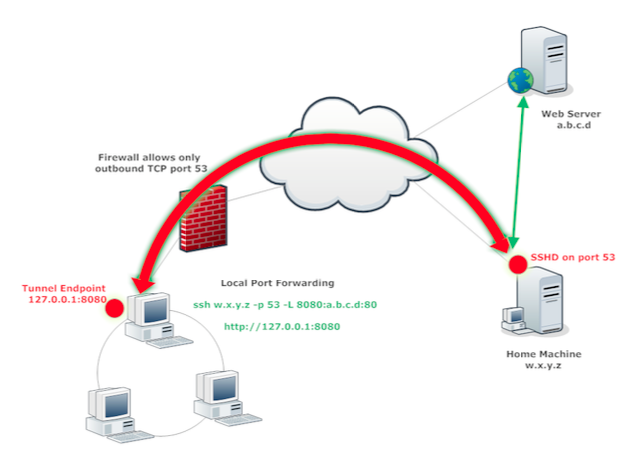

LOCAL port forwarding
Can be used for bypassing egress connection fw rules.
We need remote sshd proxyfying server which listens on fw allowed port.
Command
Executed on machine in network with firewalled egress connection
ssh <user@sshd_server> -p <sshd_port> -L <local_port>:<remote_webserver>:<remote_webserver_port>
